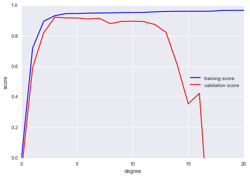

Horizontal Logo CMYK Full Colour.png)
Contributing to AI Singapore’s AI Practitioner Handbook
Contents
Contributing to AI Singapore’s AI Practitioner Handbook#
Contributors: Ryzal Kamis, Assistant Head (MLOps) & Kenny WJ Chua, Senior AI Engineer
This miscellaneous chapter covers two main aspects of contributing to the handbook– workflow conventions for writing a new sections, and conventions for the content in each chapter.
Workflow conventions for a new section#
This section covers the steps required to write a new section of the handbook. In summary, the 5 steps are as follows:
Create new issue
Fill in issue details
Open new feature branch with name
chX-issueNumAdd issue to board (i.e., GitHub Projects); move to review section when completed
Submit pull request to main branch
1. Create a new issue#

2. Fill in issue details#

3. Open new feature branch with name chX-issueNum#
E.g., branch ch1-issue5 denotes the feature branch for issue 5, which is a section within chapter 1

4. Add issue to board (i.e., GitHub Projects); move to review section when completed#

5. Submit pull request to main branch#
Before submitting the pull request, please ensure that all items in the definition of done are completed. Please build the site locally, and visually verify that your contributions are displayed as intended. You may build the site from the base directory of the repository using the the CLI command:
jupyter-book build .

For AISG contributors, please submit your pull requests at least three working days before sprint review.
After reviewing your issue, reviewers will provide suggestions for edits, if any.
Content Conventions#
This section covers the conventions that were adhered to in writing this book and how they affect the appearance as well as standardisation efforts. Aside from ensuring that this book remains readable and accessible, such conventions would make the process of maintaining and reviewing contributions manageable. The conventions are covered across 4 different sections:
Structure
Content
Language
Formatting
To expedite the process for checking if your contributions adhere to the conventions, you may refer to the table below:
Summary Checklist:
No subdirectories are to be created within chapter directories.
Only Markdown files are to be used for generating content.
If a Jupyter Notebook is used, use Jupytext pairing function to export to MyST flavoured Markdown file. Commit and version both files.
Ensure headers are in sequential order.
No manual table of contents.
Citations and bibliographioes are populated in the centralised BibTeX file
book/references.biband referred to correctly.For language, use Singaporean Standard English.
SECTION |
CHECK |
|---|---|
Structure |
Check that your content is in the appropriate location/directory. |
Content |
Focus on long-standing content like principles, strategies, design patterns, or digestible concepts. |
Content |
Minimise references to tools. |
Content |
Limit to 500 words. |
Language |
Write in the form of a continuous prose. |
Language |
Use singular first-person pronouns and address readers as second person. |
Language |
Omit contractions. |
Language |
Avoid AISG terminology. |
Formatting |
Insert snippet for contributors at the top of your content. |
Formatting |
Adhere to PEP 8 for Markdown files (line lengths), code and Jupyter Notebooks. |
Formatting |
Use MyST flavour for Markdown documents. For notebooks, pair using Jupytext. |
Formatting |
Use sequential headings. |
Formatting |
Do not create TOCs manually. |
Formatting |
Present tables or figures inline after first mention. |
Formatting |
Credit references at the end of your content. Do not use in-text citations or bibliographies. |
Structure#
You may refer to this section for the appropriate directories which files and assets are to be placed under.
Repository Tree#
The tree of the repository containing the book is structured as such:
ai-practitioner-handbook
│
├── _config.yml <- YAML file detailing configurations for
│ Jupyter Book.
├── _toc.yml <- Configuration file that determines the
│ structure of the book.
├── .gitignore <- File for specifying files or directories
│ to be ignored by Git.
├── CHANGELOG.md <- Text file that lists changes made to the
│ project in chronological order.
├── CONTRIBUTING.md <- File specifying conventions and formats
│ for contributors' reference.
├── README.md <- The top-level README containing basic
│ information of the project.
├── requirements.txt
│ ^- File specifying dependencies needed to
│ generate the book.
│
├── .github <- Folder (currently) housing workflow
│ definitions for GitHub Actions.
└── book <- Directory containing book's contents and
| assets.
|── assets
| ^- Directory containing non-text assets to be
| referenced by the book.
└── references.bib
^- Bibtext file containing citations and
bibliographies to be referenced by the book.
The files and directory that contributors will be mainly working with are the following:
_toc.ymlrequirements.txtbook/**
Other files or directories are usually not to be modified unless required and requested by the core reviewers of the book.
Book Directory & Contents#
Most contributions will be populating the book directory and mainly
within directories pertaining to the different chapters.
Below describes each of the chapters and their respective subdirectories:
1. Pre-project Phase#
Directory Name: book/1-pre-project-phase
Synopsis: To be filled in…
Sections:
Section 1
Section 2
2. Project Management & Technical Leadership#
Directory Name: book/2-proj-mgmt-tech-lead
Synopsis: To be filled in…
Sections:
Section 1
Section 2
3. Collaborative Development Platforms#
Directory Name: book/3-collab-dev-platforms
Synopsis: To be filled in…
Sections:
Section 1
Section 2
4. Literature Review#
Directory Name: book/4-lit-review
Synopsis: To be filled in…
Sections:
Section 1
Section 2
5. Data Management, Exploration & Processing#
Directory Name: book/5-data-mgmt-exp-proc
Synopsis: To be filled in…
Sections:
Section 1
Section 2
6. Modelling#
Directory Name: book/6-modelling
Synopsis: To be filled in…
Sections:
Section 1
Section 2
7. Solution Delivery#
Directory Name: book/7-solution-delivery
Synopsis: To be filled in…
Sections:
Section 1
Section 2
8. Documentation & Handover#
Directory Name: book/8-documentation-handover
Synopsis: To be filled in…
Sections:
Section 1
Section 2
Any new chapters or sections (within a chapter) to be added are to be subjected to pull requests and further discussions and reviews. Sections within chapters are all to be structured in a flat manner and subdirectories are not to be used.
Content#
Here, we list down some pointers for you to keep in mind when formulating your content:
Do focus on content that can stand the test of time such as principles, strategies, design patters or digestible concepts.
In this field of work, tools come and go and become obsolete quite quickly so minimise references to any.
We aim to be concise but impactful so do limit the number of words to 500.
Language#
For consistency across all chapters, contributors are to stick to the usage of a single language: Singaporean Standard English, which is not much different from Standard British English.
Reviewers and contributors are to ensure correct grammar and consistent tone for contributions:
Your contents are to be presented in the form of a continuous prose.
Do use singular first-person pronouns. For example: “I suggest…”.
Do address readers as second person. Example: “you may encounter…”
Avoid contractions. Example: “let us” instead of “let’s”.
Avoid AISG-specific terminology, e.g., “100E”, “AI Apprentices”. Use neutral alternatives such as “AI/ML project” and “junior developers”, respectively, that a general, external audience can better understand.
This is a collective effort and everyone has a part to play in maintaining the quality of the book.
Reference(s):
Formatting#
This section details the format that contributors can refer to when contributing content and files to the book.
Contributors’ Credit#
For the content pieces you have worked on, do remember to insert the following snippet right after the header title with your name for proper crediting.
...
Contributor(s): <YOUR_NAME_HERE>, <ANOTHER_NAME_HERE>
---
...
PEP 8#
All documents like Markdown, sample code, or Jupyter Notebooks are to be subjected to the conventions laid out by PEP 8. Especially the maximum line length; limit all lines to a maximum of 72 characters. For code, the allowable maximum is 72 characters. However there are some exceptions like when links or Markdown tables are concerned.
You can configure your IDE’s or editor’s settings to set vertical rulers.
Reference(s):
Markdown Flavour#
This book treats Markdown files as first class citizens with regards
to contents. Meaning: all of the book’s contents are to be strictly
derived from
MyST flavoured Markdown
files. A contributor may formulate contents within Jupyter Notebooks
(.ipynb files) but they would need to do the following:
Create the Jupyter Notebook under
notebooks, under the appropriate subdirectory corresponding with the chapter it is meant for.Its contents are to be converted out to a Markdown file. This can be done with Jupytext, through it’s paired notebooks functionality.
In this case, both the paired
.mdand.ipynbfiles are to be committed.
Headers#
When using headers, please do use them sequentially.
An example of inappropriate usage:
# Top Heading
### Section
Appropriate format:
# Top Heading
## Section
Table of Contents for Sections#
Since Jupyter Book automatically generates table of contents (TOCs) that appears on either side of the sidebars, manually written TOCs are unnecessary.
Figures & Tables#
Figures and tables are to be presented or inserted inline after it is first mentioned in main text. For example:
In the chart below, you would observe that the model is overfitted.
[Chart showing model overfitting](./book/assets/images/charts/example-chart.png)
The snippet above would yield the following results:
In the chart below, you would observe that the model is overfitted.

Crediting References#
For any part of a content that references to external resources, you are to ensure that the resources are listed at the end of every document, like so:
__Reference(s):__
- [Jupyter Book Docs - Citations and bibliographies](https://jupyterbook.org/en/stable/content/citations.html#citations-and-bibliographies)
- [`sphinxcontrib-bibtex` Docs](https://sphinxcontrib-bibtex.readthedocs.io/en/latest/)
The snippet above would yield the following results:
Reference(s):
There will be no need for in-text citations and bibliography.